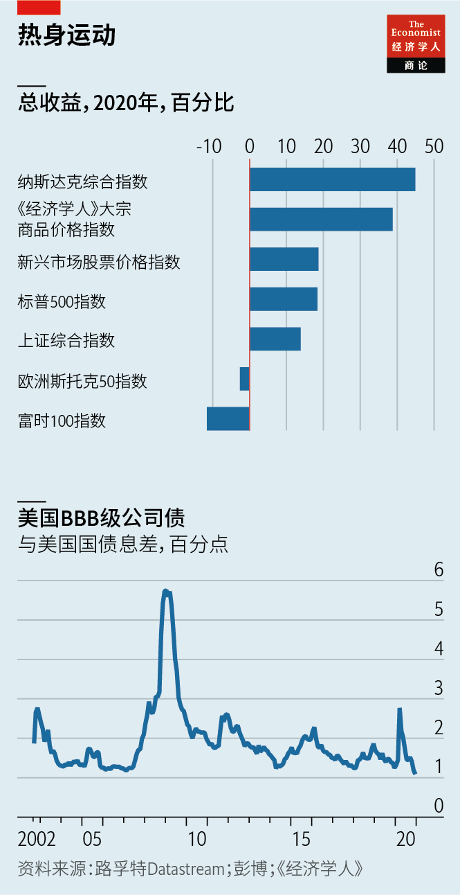
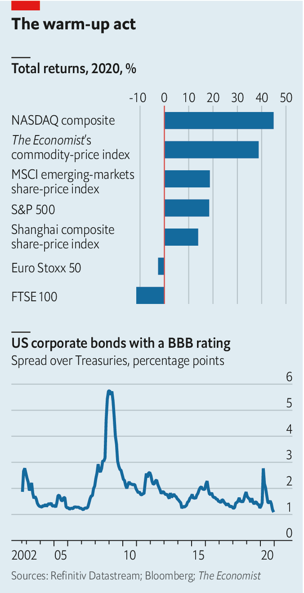

2021-01-17T14:23:46+00:00
2021年的市场
融涨中
为什么股价的疯狂上行可能还会继续
世界瞬息万变，但华尔街和伦敦金融城的投资银行家一直坚持着某些习惯。其中之一就是描绘来年经济和金融市场可能走向的年度“展望”。在年底的那几周，这些厚厚的文件就会开始出现在收件箱中。
一家银行的策略师在11月中旬刚写完令自己满意的展望。他对2021年股市的判断是“具建设性”（constructive）——华尔街表达“看涨，但非盲目看涨”之意的行话。不过几天后，他对自己又没那么满意了。他的观点并非独树一帜。竞争对手银行的策略师的预测同样是“具建设性”。
其中原因不难理解。新冠疫情有望终结。富裕国家的政府正在重新发现用财政手段刺激经济的好处。实际利率如此之低，使得天价股票看起来都很便宜。简而言之，股市进一步上涨的条件似乎已齐备。实际上，这条件成熟到让一个念头在策略师的脑海中挥之不去：有什么能阻挡全球股价疯狂上涨？
妨碍市场融涨的因素可能有几点。一是整体经济。自4月以来，市场已经从关注新冠疫情带来的损失转向展望后疫情时代的复苏。有效疫苗的发现似乎让复苏更近了。2020年底美国和中国的经济指标强劲得令人惊讶。但病毒不会善罢甘休。更具传染力的新冠毒株已迫使欧洲部分地区实施了更加严格的封锁。疫情对世界经济的伤害很可能要比预期更长久。
另一个障碍是看涨情绪。美国银行（Bank of America）12月的月度调查显示，上一次基金公司对股市涨幅如此乐观是在2018年1月。它们之中绝大多数认为世界经济处于“早周期”阶段（即未来的增长道路还很长）。不过矛盾的是，乐观情绪也常被视为需要保持警惕的原因，而投资者已经操之过急了。实际上，2018年以大量关于市场融涨的讨论开局，却以严重的股市亏损告终。
目前许多乐观情绪都是基于政策将继续支持经济的想法。但如果政策制定者改变方针怎么办？持续的财政支持需要政治上的行动和协议，而这些并不是一直都可靠。人们自然会担心刺激措施可能会突然终止，就像2010年之后发生的那样。不过，到目前为止还没有这种迹象。摩根大通的经济学家估计，美国在圣诞节后通过的9000亿美元财政刺激计划将为2021年的GDP增长增加两个百分点。共和党丢掉了在参议院的多数席位，这可能会为更宽松的财政政策打开大门。在欧洲，年中开始应该能感受到7500亿欧元（9200亿美元）复苏基金的推动作用。
但是，还存在另一个风险，它也让一些看涨派夜不能寐，那就是通胀重新抬头。封锁和财政转移支付给富裕国家的消费者留下了额外的储蓄和大量被抑制的需求，为疫情过后的消费大潮提供了动力。同时，经济衰退又削减了供给能力：许多小公司（也有一些大公司）倒闭了。如果供给瓶颈足够多，支出的激增就可能推高通胀。这种情况已经出现在大宗商品市场中：铜和铁矿石的工业需求（特别是来自中国的）的复苏遭遇了供给吃紧，导致价格上涨。
短暂的一轮通胀上升看起来是有可能的。而持续的连番攀升，乃至要迫使央行突然加息，似乎就没那么可信了。债券市场也不太可能会激烈反应以至于严重摧毁股价。债券收益率几个月来一直在小幅上涨：本月初，十年期美国国债收益率自2020年3月以来首次超过1％。这种缓慢上升的趋势确实反映了市场对通胀的预期上升，目前美国通胀水平已超过2％。但通胀保值国债的收益率几乎没有变化，而这种实际收益率才是股市估值的基准。如果这种略高于目标的通胀预期、美联储政策宽松和实际收益率稳定的格局保持不变，那么它很可能会提振而不是阻碍股价。
还要考虑其他的疫情后续影响。一大问题是债务。为确保有足够现金来承受封锁带来的收入损失，企业大量举债。债务负担的增加将拖累公司的财务状况，并可能反过来对股价造成压力。但这个压力可能不大。央行购买公司债使得那些能在批发资本市场融资的公司的融资成本非常低：看一下债务评级为BBB（风险最高的投资级债券）的公司的借贷成本就知道了。公司债和国债收益率的息差大约与2006年时一样低，当时广泛的信贷环境处于危险的宽松水平。这么低的借贷成本让债务更容易承担。一个相关问题是，公共债务激增最终将推高实际利率。但危机过后对流动安全资产的需求往往会保持在高水平。这类资产中最主要的一种是政府债券。
因此，细看会发现，股市上行路上的许多拦路虎似乎并不那么令人生畏。过去一年对经济来说是糟糕的，但许多股市仍然产生了正收益。原因之一是衰退对小型非上市公司的伤害甚于大型上市公司。另一个原因是债券的收益率很低。资产管理公司GMO的联合创始人杰里米·格兰瑟姆（Jeremy Grantham）在近期的一份报告中指出，美国股市已经涨得太多。“我估计这泡沫顶多能撑到春末或夏初。”他写到，并建议客户转投廉价的新兴市场股票避险。
格兰瑟姆的报告非常值得一读。但有一个疑问挥之不去。在现在的高价位持有股票的理由是利率低。全球都是这种情况。所以为什么股价不会在其他地方融涨呢？也许华尔街对2022年的年度展望将会评述美国股市泡沫破裂的残局。但是，似乎同样有可能的是，策略师们将为已经冲上了更高点上的价格呐喊助威——当然了，仍会是“具建设性”。
2021-01-17T14:23:46+00:00
The markets in 2021
Melting up
Why the crazy upward march in stock prices might just continue
IN A FAST-CHANGING world, the investment bankers of Wall Street and the City of London have clung to certain rituals. One of these is the annual “outlook”, which lays out the path the economy and financial markets might take over the coming year. These hefty documents start to appear in inboxes a few weeks before the year’s end.
In mid-November a strategist at one bank had just put his outlook to bed with satisfaction. His call on stocks for 2021 was “constructive”: Wall-Street-speak for “bullish, but not mindlessly so”. But a few days later he was feeling a little less pleased with himself. His outlook was not distinctive. Rival strategists too were constructive.
It is not hard to see why. An end to the covid-19 pandemic is in sight. Rich-world governments are rediscovering the joys of fiscal pump-priming. Real interest rates are so low as to make sky-high stocks look cheap. In short, the conditions seem ripe for further stockmarket gains. So ripe, indeed, that a persistent thought keeps surfacing in the minds of strategists. What is to stop stock prices worldwide going on a really crazy run?
Several things could get in the way of a market melt-up. One is the economy. Since April markets have been looking beyond the damage from covid-19 to the post-pandemic recovery. The discovery of workable vaccines seemed to bring that world closer. Economic indicators for America and China towards the end of 2020 were surprisingly strong. But the pandemic is not going quietly. More virulent strains of covid-19 have forced stricter lockdowns in parts of Europe. The harm to the world economy is likely to be more prolonged than hoped.
Another obstacle is bullish sentiment. The last time fund mangers were this optimistic about the scope for stockmarket gains was January 2018, according to a monthly survey by Bank of America done in December. A large majority think the world economy is in the “early-cycle” phase (ie, that there is a long runway of growth ahead). Paradoxically, positive sentiment is often seen as a reason to be wary, and that investors have got ahead of themselves. Indeed, 2018 began with much talk of a market melt-up, but ended with heavy stockmarket losses.
A lot of the current optimism rests on the idea that policy will continue to support the economy. What if policymakers change tack? Continued fiscal support requires political action and agreement, which cannot always be relied upon. A natural concern is that stimulus might be withdrawn abruptly, as it was after 2010. So far, though, there is little sign of this. In America the $900bn fiscal package passed after Christmas will add two percentage points to GDP growth in 2021, reckon economists at JPMorgan Chase, a bank. The loss of the Republican majority in the Senate may open the door to further fiscal easing. In Europe the boost from the €750bn ($920bn) recovery fund should start to be felt from the middle of the year.
Yet another risk, and one that keeps some market bulls awake at night, is resurgent inflation. Lockdowns and fiscal transfers have left rich-world consumers with extra savings and a lot of pent-up demand—fuel for a post-pandemic spending spree. Meanwhile recession has also taken out supply capacity: a lot of small firms (and some large ones) have gone under. With enough bottlenecks, a surge in spending could drive up inflation. A dynamic of this kind has been playing out in commodity markets: a revival in industrial demand (notably from China) for copper and iron ore has bumped up against supply constraints and led to a run-up in prices.
A temporary bout of inflation seems plausible. A sustained burst of higher inflation—and one that forces central banks into abruptly raising interest rates—appears less so. Nor is it obvious that bond markets will react so violently as to fatally undermine stock prices. Bond yields have been edging up for months: early this month the ten-year Treasury yield exceeded 1% for the first time since March 2020. This upward creep does reflect higher market expectations of inflation, which are now above 2% in America. But yields on inflation-protected Treasuries have barely budged—and it is these real yields that are the benchmark for stockmarket valuations. If the pattern of modestly above-target inflation expectations, a relaxed Federal Reserve and steady real yields stays intact, it may well boost equity prices, not retard them.
There are other hangover effects from the pandemic to consider. A big one is debt. Companies borrowed heavily to ensure they had enough cash to withstand the revenue losses from lockdowns. The increased debt load will drag on companies’ finances and could in turn weigh on equity prices. But it may not be a heavy weight. Central-bank buying of corporate bonds has kept financing costs remarkably low for companies with access to wholesale capital markets: just consider the cost of borrowing for companies with debt rated BBB, the riskiest investment-grade rating. The spread over Treasuries is about as low as it was in 2006, when wider credit conditions were dangerously easy. Such low borrowing costs make debt burdens easier to carry. A related concern is that the explosion in public debt will eventually push up real interest rates. But demand for liquid safe assets tends to stay high after crises. Chief among these are government bonds.
On a closer look, then, many of the obstacles to the stockmarket’s upward march do not seem so formidable. A terrible year for the economy still produced positive returns in many stockmarkets. The fact that recession has hurt small unlisted businesses more than large listed firms is one part of the story. The other is the paucity of yields on offer from bonds. In a note this week Jeremy Grantham, co-founder of GMO, an asset manager, argues that stocks in America have already gone too far. “My best guess as to the longest this bubble might survive is the late spring or early summer,” he writes, and advises seeking refuge in cheap emerging-market stocks.
Mr Grantham’s note is well worth reading. But a thought lingers. The case for owning stocks at these prices depends on low interest rates. This is a global condition. So why would stock prices not melt up elsewhere? Perhaps Wall Street’s year-ahead notes for 2022 will survey the wreckage of a stockmarket bust in America. But it seems as plausible that strategists will be cheering on prices from higher peaks—constructively, of course. ■
2021-01-17T14:23:46+00:00
2021年的市場
融漲中
為什麼股價的瘋狂上行可能還會繼續
世界瞬息萬變，但華爾街和倫敦金融城的投資銀行家一直堅持着某些習慣。其中之一就是描繪來年經濟和金融市場可能走向的年度“展望”。在年底的那幾周，這些厚厚的文件就會開始出現在收件箱中。
一家銀行的策略師在11月中旬剛寫完令自己滿意的展望。他對2021年股市的判斷是“具建設性”（constructive）——華爾街表達“看漲，但非盲目看漲”之意的行話。不過幾天後，他對自己又沒那麼滿意了。他的觀點並非獨樹一幟。競爭對手銀行的策略師的預測同樣是“具建設性”。
其中原因不難理解。新冠疫情有望終結。富裕國家的政府正在重新發現用財政手段刺激經濟的好處。實際利率如此之低，使得天價股票看起來都很便宜。簡而言之，股市進一步上漲的條件似乎已齊備。實際上，這條件成熟到讓一個念頭在策略師的腦海中揮之不去：有什麼能阻擋全球股價瘋狂上漲？
妨礙市場融漲的因素可能有幾點。一是整體經濟。自4月以來，市場已經從關注新冠疫情帶來的損失轉向展望後疫情時代的復蘇。有效疫苗的發現似乎讓復蘇更近了。2020年底美國和中國的經濟指標強勁得令人驚訝。但病毒不會善罷甘休。更具傳染力的新冠毒株已迫使歐洲部分地區實施了更加嚴格的封鎖。疫情對世界經濟的傷害很可能要比預期更長久。
另一個障礙是看漲情緒。美國銀行（Bank of America）12月的月度調查顯示，上一次基金公司對股市漲幅如此樂觀是在2018年1月。它們之中絕大多數認為世界經濟處於“早周期”階段（即未來的增長道路還很長）。不過矛盾的是，樂觀情緒也常被視為需要保持警惕的原因，而投資者已經操之過急了。實際上，2018年以大量關於市場融漲的討論開局，卻以嚴重的股市虧損告終。
目前許多樂觀情緒都是基於政策將繼續支持經濟的想法。但如果政策制定者改變方針怎麼辦？持續的財政支持需要政治上的行動和協議，而這些並不是一直都可靠。人們自然會擔心刺激措施可能會突然終止，就像2010年之後發生的那樣。不過，到目前為止還沒有這種跡象。摩根大通的經濟學家估計，美國在聖誕節後通過的9000億美元財政刺激計劃將為2021年的GDP增長增加兩個百分點。共和黨丟掉了在參議院的多數席位，這可能會為更寬鬆的財政政策打開大門。在歐洲，年中開始應該能感受到7500億歐元（9200億美元）復蘇基金的推動作用。
但是，還存在另一個風險，它也讓一些看漲派夜不能寐，那就是通脹重新抬頭。封鎖和財政轉移支付給富裕國家的消費者留下了額外的儲蓄和大量被抑制的需求，為疫情過後的消費大潮提供了動力。同時，經濟衰退又削減了供給能力：許多小公司（也有一些大公司）倒閉了。如果供給瓶頸足夠多，支出的激增就可能推高通脹。這種情況已經出現在大宗商品市場中：銅和鐵礦石的工業需求（特別是來自中國的）的復蘇遭遇了供給吃緊，導致價格上漲。
短暫的一輪通脹上升看起來是有可能的。而持續的連番攀升，乃至要迫使央行突然加息，似乎就沒那麼可信了。債券市場也不太可能會激烈反應以至於嚴重摧毀股價。債券收益率幾個月來一直在小幅上漲：本月初，十年期美國國債收益率自2020年3月以來首次超過1％。這種緩慢上升的趨勢確實反映了市場對通脹的預期上升，目前美國通脹水平已超過2％。但通脹保值國債的收益率幾乎沒有變化，而這種實際收益率才是股市估值的基準。如果這種略高於目標的通脹預期、美聯儲政策寬鬆和實際收益率穩定的格局保持不變，那麼它很可能會提振而不是阻礙股價。
還要考慮其他的疫情後續影響。一大問題是債務。為確保有足夠現金來承受封鎖帶來的收入損失，企業大量舉債。債務負擔的增加將拖累公司的財務狀況，並可能反過來對股價造成壓力。但這個壓力可能不大。央行購買公司債使得那些能在批發資本市場融資的公司的融資成本非常低：看一下債務評級為BBB（風險最高的投資級債券）的公司的借貸成本就知道了。公司債和國債收益率的息差大約與2006年時一樣低，當時廣泛的信貸環境處於危險的寬鬆水平。這麼低的借貸成本讓債務更容易承擔。一個相關問題是，公共債務激增最終將推高實際利率。但危機過後對流動安全資產的需求往往會保持在高水平。這類資產中最主要的一種是政府債券。
因此，細看會發現，股市上行路上的許多攔路虎似乎並不那麼令人生畏。過去一年對經濟來說是糟糕的，但許多股市仍然產生了正收益。原因之一是衰退對小型非上市公司的傷害甚於大型上市公司。另一個原因是債券的收益率很低。資產管理公司GMO的聯合創始人傑里米·格蘭瑟姆（Jeremy Grantham）在近期的一份報告中指出，美國股市已經漲得太多。“我估計這泡沫頂多能撐到春末或夏初。”他寫到，並建議客戶轉投廉價的新興市場股票避險。
格蘭瑟姆的報告非常值得一讀。但有一個疑問揮之不去。在現在的高價位持有股票的理由是利率低。全球都是這種情況。所以為什麼股價不會在其他地方融漲呢？也許華爾街對2022年的年度展望將會評述美國股市泡沫破裂的殘局。但是，似乎同樣有可能的是，策略師們將為已經衝上了更高點上的價格吶喊助威——當然了，仍會是“具建設性”。